A balcony screen, with timber and root pads behind it. Explore the parts
E1 · Proposed wart fern growing test
How shallow can a wart fern planter be?
The same wart fern starts in each drawing, with matching roots and the soil surface at the same height. Give both planters the same inside width and length, growing mix, drainage design and light. Only the soil depth changes.
Shallow planter
150 mm soil depth
26.25 LSoil space
18.38 kgEstimated wet mix
Holder, plant and support still to weigh.
Deep planter
300 mm soil depth
52.50 LSoil space
36.75 kgEstimated wet mix
Holder, plant and support still to weigh.
Approved planting-day drawings. They show the difference in depth at a common scale. Input changes update the numbers. Wet mix is estimated after free drainage. Measure the real roots before settling on either depth.
26.25 L less soil · 18.38 kg less drained-wet mix
Example only · 500 × 350 mm inside both planters · 0.70 kg/L drained-wet bulk density.
Less soil gives roots less room and may change how often the fern needs water. The two depths may also hold different amounts of water per litre after draining.
Change the example measurements
These starting values are design assumptions. Enter the inside dimensions to the soil line. Use a bulk density for wet mix after free drainage, including the water still held in its pores.
What still needs a growing test?
Measure the starting rootballs. Choose a shallow holder they fit without bending or trimming roots. Match stock and repeat both depths under the same light.
Count surviving plants and healthy new fronds over the same period. Check root crowding at the base and sides at harvest.
Water to the same moisture target. Record how often and how much each needs, what drains out, and how wet the mix stays.
Weigh each planted assembly after the same drainage interval. For a blocked-drain or heavy-rain case, measure a separate fully saturated and ponded condition. Include mount, shell and fittings in the load record.
A promising shallow holder keeps the fern growing well with care needs the project can meet. The proposed test leaves the minimum healthy depth open. Approved depth study
How the numbers work
Soil space in litres equals internal length × internal width × fill depth in millimetres, divided by 1,000,000. This assumes a straight-sided fill and uses the full soil envelope. Roots and any internal parts can displace some of that mix.
Estimated drained-wet mix mass equals soil space × wet bulk density. The density already includes retained water. The example uses 0.70 kg/L for both depths as an editable assumption. For a measured value, weigh the wet mix in a known filled volume after free drainage and divide mix-only mass by that volume.
Arguedas and colleagues wetted test mixes to saturation and let them drain by gravity to measure water held after drainage. Container height and mix affect that result. This estimate does not cover full saturation, standing water or structural capacity. Original substrate experiment, methods and Table 1 · Assumptions and formula record
What each planter part does
Shell and base. Enclose the mix. The base moves while the inside plan stays the same. Shell material and thickness remain open.
Growing mix. Holds water and air around the roots. Use the same recipe and packing in both planters. Depth changes the amount of mix.
Base drain. Gives water a way out. Match outlets and leave space to clear them. Size and construction remain open.
E2 · Proposed growing test
Can two ferns share one planter without one struggling?
Wart fern and giant sword fern were recorded on the same oil palm at Lekki. That makes them a useful pair to test in a trough, where both plants draw from the same mix. Palm 10 field record
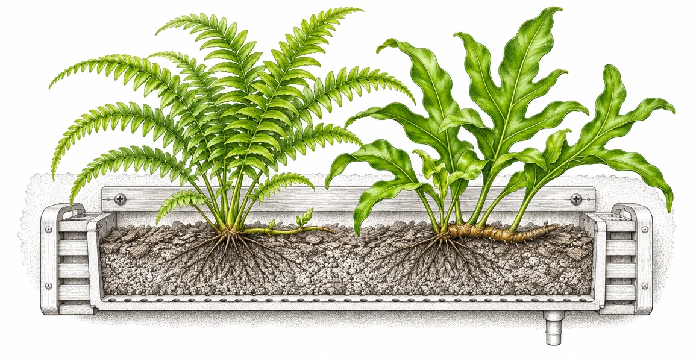
Proposed shared holder. Match planter, mix, light and starting stock.
Measure each fern’s new healthy fronds, survival and spread. The treatment drawings show starting arrangements. Their growth outcome is open.
How to run the five treatments
Use four independent groups with all five treatments in each group. Match the starting size within each species. Randomise holder position and balance the two species left and right in mixed pairs. Record results by plant and compare across holders. Keep the observation period and moisture target common.
In the two-plant treatments, compare wart fern in mixed versus wart-only pairs and sword fern in mixed versus sword-only pairs. To test crowding, compare each same-species pair per plant against that species grown alone. Approved shared fern trial
E3 · Shape and geometric fit
Which shape makes sense for this plant?
Wart fern spreads along the surface. Check first which shapes give it the same amount of soil. Then ask how much soil each shape can hold when the same amount of floor area is set aside.
What the shapes hold constant
The diagrams use straight-sided inside outlines at the same depth. The rectangle is 1.5 times as long as it is wide and the trough is three times as long. In the floor-area mode, the circle leaves corners outside its rim. Reserved area means the bounding rectangle before allowing space for walls, brackets or people. Equal area can still give very different lengths and widths.
In the growing test, use the same mix and comparable drains. Record root spread, unused corners, drainage time and the space needed for hands, feet and tools. The geometry alone supplies no healthy-fit verdict. Actual holders in the library
E4 · Published mix measurements and a proposed fern test
Which growing mix stays damp but leaves air around the roots?
In the same lab columns, coir left more air space after draining. A pine bark and peat blend held more water. That gives us two mixes to compare in the same wart fern planter.
Choose one depth after measuring the fern’s roots. Use the same holder, packing procedure, drain and light for both mixes. Record how much water each gets, how much drains out and how damp the top and bottom stay. Weigh at the same times after watering and draining. Count healthy new fronds.
The lab mix, column depth and drainage interval are part of those figures. The fern holder may behave differently. Use its measured wetness and plant health before testing a wick, a different drain or a thicker layer. Mix data and calculation record
E5 · Proposed mounting comparison
Can a fern grow on a thin wall pad instead of in a pot?
Wart fern’s creeping stem can attach to a surface or spread in soil. The same fern lets us ask how support and water access change when its roots leave the pot. NParks species profile
Porous pad
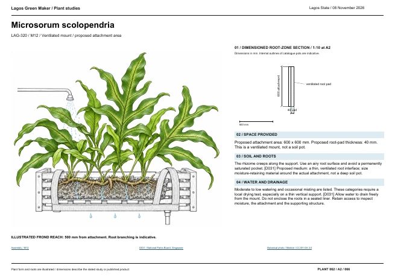
Saved mount. The model shows a 40 mm growing layer, drip supply and backing. Measure how long the thin pad stays damp and check wet weight.
Rough mount
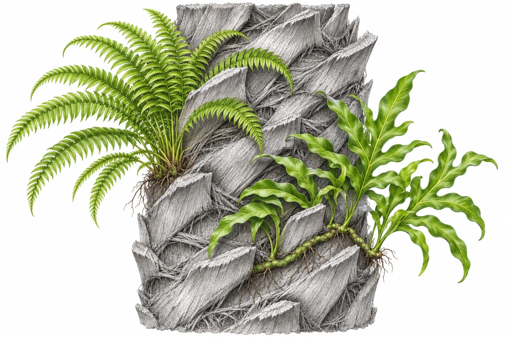
Proposed test surface. The Lekki palm gives us the question. Compare rough backing with a small damp root pocket. Check attachment and how a replacement would lift off.
Drained pot
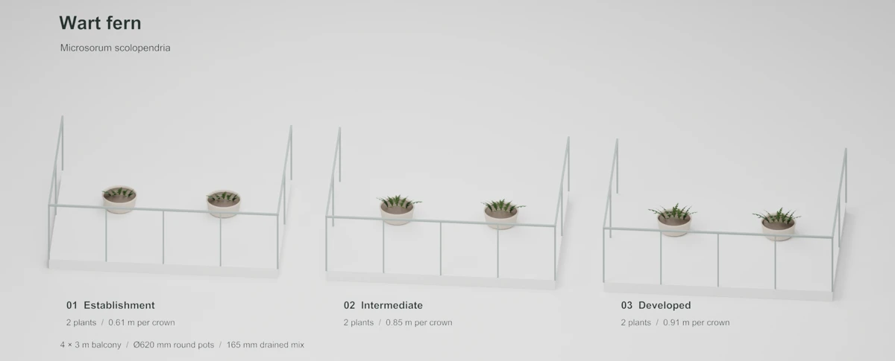
Saved pot study. The model has a 620 mm outside rim and 165 mm of mix. Give roots room in soil and check when the holder needs watering or repotting.
Keep the comparison fair
Use similar divisions under comparable light. Record the water inputs, dry spells, attachment and healthy new fronds. Weigh each complete support wet and dry. Time a replacement in a bench mock-up. A pad or rough mount only becomes an option after the fern can hold on and stay healthy in that small rooting space.
Use the same tray empty, filled with mix, and planted with wart fern. Run each from a dry and a wet start. That separates the effects of the holder, the mix and the fern.
How much water leaves and when it leaves are different questions. Compare cumulative runoff over the same observation window. Compare peak time and peak flow using the same collection intervals.
Where the water goes
One millimetre of rain on one square metre equals one litre. Rain input minus collected outflow is water uncollected at that time. It can include water still draining, evaporation or a missed outlet. Use a common end time and capture drain and overflow. Log starting water storage if comparing wet starts.
At each timed interval collect litres, then divide by that interval’s minutes to find its average flow. The traced peak depends on the collection interval. Stovin and colleagues’ monitored roof trials
E7 · Proposed full-size access check
Can somebody look after it from a safe position?
The stepped wart fern trough has a rear row 780 mm above the balcony floor and screened drains underneath. Use that real arrangement to find out what a person can reach from the deck.
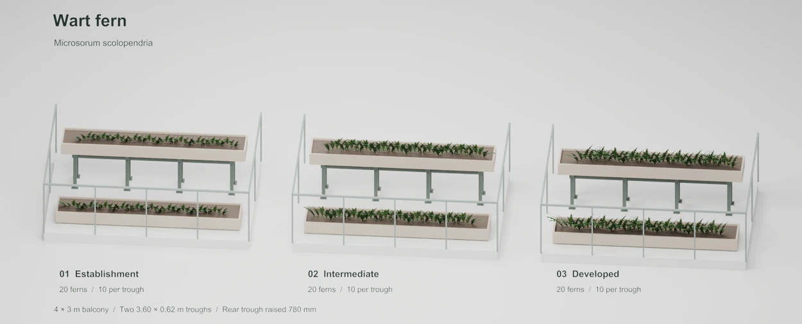
Saved two-trough assembly. The stand carries the raised rear trough.
Water from the deckCheck reach to the rear row and room for the container or hose.
Reach the screened drainTest clearing it and catching the flow from below.
Trim the frondsRecord the tool and whether leaves hide a working edge.
Lift out one fernFollow the route from trough to bench with the rootball intact.
Mock up the reach. Weigh the holder. Check the support. The drawing cannot establish safe access or load capacity.
Trace the parts
Try these steps on a free-standing mock-up from floor level. Mark the real work position, obstacles, grip and lift path. Have the project engineer review support, fixings and wet loads before installing on the building. Troughs, stand, drains and model record
Check reach on every assembly. The compact staghorn has solid timber and a front screen around a 380 mm gap. A way to reach and remove the pad still needs design. The pothos trough has a solid base in the model. A drain and a way to clear it both need a detail. Staghorn assembly · Pothos assembly
E8 · Follow-up to E4
Can the container supply water through a short dry spell?
First measure which mix stays moist with enough air in E4. Then compare a wick-fed wart fern with one watered from above. Use the same moisture target.
A tank can hold enough water and still fail to deliver it to the roots. Record water added, moisture and overflow, time between visits, and how the fern grows.
How to check the water path
Measure daily reservoir draw or refill for the proposed system while holding the moisture target. Include system losses. Log water added and drainage separately in the normally watered comparison. Multiply that amount by the proposed refill gap for a first supply estimate. A bench trial measures how much water the wick actually delivers, water left below the working level or displaced by parts, and whether the root mix dries or stays soaked. Check overflow independently.
A pot gives one plant its own soil. A trough lets several plants share a row. A shelf carries the holder. Start with what the plant needs, then check what fits the building.
Ordinary pots
Give each plant its own space as its base grows. This study moves from a shared trough to individual pots.
Desert rose · Current stepped balcony studySizes, parts and checks
Three stages
Early shared trough, then Ø400 mm pots and Ø560 mm pots. The pot diameters are outside sizes.
Soil
220 mm deep in the shared trough and medium pots, 310 mm in the larger pots. Per-pot litres are unrecorded.
Parts and connections
Round shells sit on feet. The model gives the pots a base drain. The rear row sits on a raised support, with a separate growing mix inside each pot.
Still to check
Shell product and mix, measured rootball size, when to move the plant, drainage collection and safe lifting.
Breadfruit · Round tree planter fit studySizes, parts and checks
Outside size
Ø2,360 × 660 mm high.
Soil
550 mm deep and 2,121 L by model geometry.
Fit check
The developed crown spans 18.93 m. It extends up to 9.60 m beyond the model bay.
Parts and connections
The round shell sits directly on the deck. Its continuous base shows the fit-test geometry. An outlet, raised feet and product finish need their own details.
Still to check
Water collection, wet weight, slab capacity, tree anchorage and access. The developed crown needs a different setting.
A long trough gives the surface stems room to spread in a row. A raised rear trough puts the second row above the first.
Wart fern · Reviewed two-trough balcony studySizes, parts and checks
Outside size
3,600 × 620 × 267 mm per trough.
Soil
165 mm deep and about 320 L per trough by model geometry.
Layout
Two troughs with ten ferns each. The rear base is raised 780 mm.
Parts and connections
The warm clay-coloured shell holds the mix. Each base has three 85 × 60 mm slots with screens to retain the mix. The raised row transfers weight through its own support.
Still to check
Shell and stand materials, collected drainage, safe reach to the rear row, and whether 20 plants stay healthy as they spread.
Silver inch plant · Current two-rail, 26-pot studySizes, parts and checks
Pot
Ø258 mm outside. 150 mm of growing mix. Per-pot usable litres are unrecorded.
Set-out
26 pots in every stage. Pots 280 mm apart along the bar. Bars 550 mm apart vertically.
Drain
34 mm opening in the base profile. Three feet provide room underneath when the pot is set down.
Parts and connections
Two graphite-coloured saddle clips, seated pads and a rear plate hold each pot on its bar in the model. Check how a worker can lift and service each pot from inside the balcony.
Still to check
Pot and clip materials, retention against lifting or sliding, rail and fixing capacity, wet weight of all 26 pots and where runoff lands.
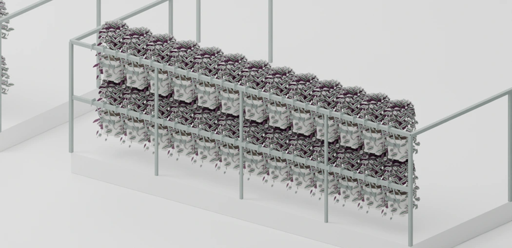
Saved clip detail. The upper and lower pots both sit inside the balcony edge.
African staghorn · Saved hanging optionSizes, parts and checks
Basket
Ø470 mm at the rim. About 250 mm from rim to basket bottom.
Growing space
Porous coir liner with loose sphagnum and a separate side pocket. Usable moss volume remains unmeasured.
Parts and connections
Graphite-coloured hoops and ribs cradle the liner. Three cables join a wall hook with a backplate and triangular brace. Water can leave through the porous liner.
Still to check
Real wire and cable grade, hook and wall anchors, saturated weight, drip collection and access to remove the basket.
A broad wall layer gives creeping stems places to spread across the inner wall. A root strip is the separate option where plants start in a narrow band.
White water lily · Rooted waterlily balcony studySizes, parts and checks
Outside plan
3,600 × 1,240 mm.
Soil and water
200 mm modelled soil depth below a separate 300 mm water layer. Usable litres and operating water volume need checking.
Parts and connections
A warm-white sealed shell holds both layers. The model has a screened waterline overflow, an open channel and a removable catch vessel. The basin sits on the deck.
Still to check
Liner, joints, water quality and overflow capacity, removal of the screen and catch vessel, and full water and plant loads.
Water lettuce · Contained floating basinSizes, parts and checks
Outside plan
3,600 × 1,240 mm.
Water only
350 mm modelled water depth. This assembly has no growing soil.
Parts and connections
The warm-white model shell has a sealed floor to hold water. A screen, overflow channel and catch vessel route excess at the rear and help contain floating material.
Still to check
Safe containment during overflow, water quality, cleaning, renewal and wet load. Confirm plant use and containment before a trial.
Southern cattail · Rooted wetland basinSizes, parts and checks
Contained example
Cattail basin outside plan 2,800 × 1,450 mm. 400 mm rooting layer and 100 mm water above it.
Site examples
Raffia’s model represents wet connected ground. The black mangrove catalogue cutaway shows a 2 × 2 m footprint, 600 mm sediment and a 150 mm study water layer.
Parts and connections
The warm-white cattail shell uses the screened side overflow and catch vessel. Wet ground and tidal sections depend on site water exchange and connected soil rather than a sealed holder.
Still to check
Actual depth and season of flooding, water chemistry, soil and root needs, overflow servicing and wet loads.
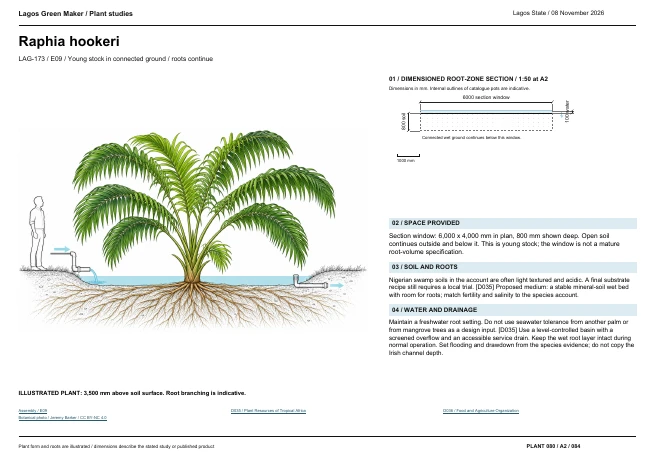
Raffia palm · wet connected ground · original catalogue.
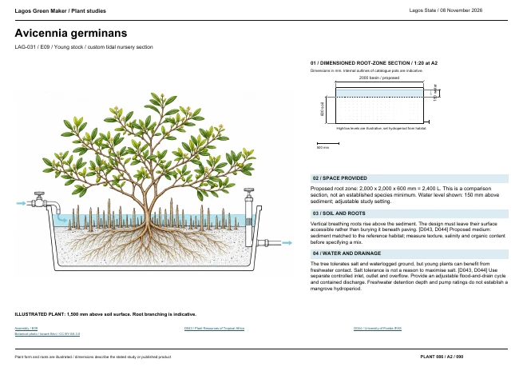
Black mangrove · tidal study · original catalogue.
Golden pothos · Current pothos balcony studySizes, parts and checks
Grid and trough
The current pothos grid uses 1,120 × 1,285 mm between frame centres. The base is 1,200 × 520 mm outside.
Soil
280 mm deep and about 151 L by geometry.
Parts and connections
Soft ties wrap stems and grid bars. The frame enters the soil. The trough feet bear on the deck. Dark sage, warm-white and earth finishes are model colours.
Still to check
Frame restraint, load and tie materials, and a designed drain and overflow from the model’s solid trough.
Desert rose · Raised row in the succulent studySizes, parts and checks
Level change
Rear holder base sits 550 mm above the balcony floor in all three desert rose stages.
Soil
The soil belongs to the trough or pot. The support adds no growing volume.
Parts and connections
A support frame lifts the rear row. The pot bench has seven slats with gaps for water to pass through. The earlier trough sits on a frame. The grey finish is a study appearance.
Still to check
Wet load, fixing and resistance to tipping, access to water and clean under both rows, and when to lift or replace pots.
Where all 100 catalogue plants sit in this library
The original catalogue uses 12 system types. Later balcony studies may change the holder. For example, the original pothos has a reservoir pot and the reviewed balcony version trains it up a grid above a trough. The cards show which configuration each drawing comes from. Use this index to find a related example. Each new plant and holder pairing still needs a fit check. Shelves and stands are counted as supports.
Golden pothos makes long climbing stems. In this model, soft ties guide the stems across the grid while the roots grow in the trough. Its aerial roots are shown free. NC State Extension plant profile
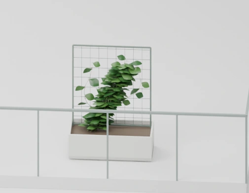
Developed stage from the saved Blender modelAssembly sketch through the trough · Reference numbers match the parts below.
1 Climbing grid · Gives the stems places to tie onto
Model sizes
1,120 × 1,285 mm between frame centrelines used for the cover calculation. Eight vertical and eight horizontal 5 × 5 mm square bars. Interior pitches are about 124.4 × 160 mm centre to centre. This leaves about 119.4 × 155 mm clear between interior bars. Edge openings differ.
Connection and finish
Bars cross in a single plane and meet the frame in the geometry. Dark sage appearance. Welds, metal grade, coating and product rating need specification.
2 Uprights and crossrails · Keep the grid in shape
Model sizes
Two 23 × 25 × 1,470 mm uprights and two 1,120 mm crossrails with 21 × 21 mm sections. The frame measures 1,143 mm outside to outside and about 1,481 mm high including the top rail above its centreline. The rail centre is 1,675 mm above the deck. The top edge is about 1,686 mm.
Connection and finish
Uprights extend 150 mm below the soil surface in the trough. A socket, base restraint and frame joint details still need design. The geometry has a dark sage appearance.
3 Soft training ties · Guide stems across the grid
Model sizes
2, 5 and 14 ties in the three model stages. The loop strand is about 4.4 mm in diameter in the builder. It wraps around a stem and a horizontal grid bar.
Connection and finish
Coir-coloured model material. Suitable tie material, slack and maintenance interval need testing.
4 Trough shell · Contains the mix and roots
Model sizes
1,200 × 520 mm outside plan. 25 mm side walls, 50 mm base and 415 mm rim height above the deck. 60 mm from soil surface to rim.
Connection and finish
One base and four warm-white walls meet in the model. Shell material, watertight joints and drain or overflow detail remain open. The saved trough models a solid base.
5 Growing mix · Gives the vine soil to root in
Model sizes
1,150 × 470 × 280 mm block inside the trough, about 151 L by geometry.
Connection and finish
Earth-coloured volume sits on the base inside the walls. Mix recipe, drained mass and effective rootable volume need measurement.
6 Feet · Support the base above the deck
Model sizes
Two 60 × 420 × 25 mm feet in the shell’s warm-white finish.
Connection and finish
Feet touch the trough base and deck. Their material, attachment and restraint against movement need design.
7 Balcony and guardrail · Host the assembly and define its edge
Model sizes
4,000 × 3,000 × 200 mm slab. Front and side handrails have 35 mm square cross-sections. Front posts are 25 mm square and side posts 30 mm square, each 1,100 mm high in the model.
Connection and finish
White slab and generic metal rail appearance. The grid sits in its own trough behind the guardrail. Slab construction, guardrail fixings and suitability for loads need project information.
See all three stages and the foliage cover
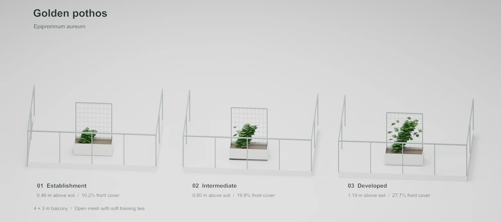
Front-facing leaf projection measured on the same mesh area in the model.
10.24% Establishment19.87% Intermediate27.68% Developed
The percentages describe leaf area projected straight onto the grid. Real growth and shade through the day still need measurements. Projection record
African staghorn fern · LAG-337
Screen the fern. Hold its moss.
African staghorn grows on other plants. The timber gives it a surface to grow on. One mesh holds moss around the fern’s base. The front screen is there to test whether a porous barrier shelters the fronds. Compare it with the same assembly without a screen. Watch how much the fronds move, where they touch and whether they rub. Kew species record
Saved compact frontage · 380 mm from timber face to mesh plane.Section sketch through one fern · Front of balcony on the left.
1 Front screen · Tests whether a porous barrier shelters the fronds
Model sizes
One 4,000 × 1,117.5 mm mesh plane. Centre pitch 25 mm in both directions. Flat ribbons are 4.5 mm wide and 0.9 mm thick. Typical clear opening is 20.5 mm square. About 67.2% open by the model cell geometry, excluding the frame and foliage.
Connection and finish
Muted green appearance. The plane sits in the perimeter frame. Clip, weld or other joint detail, real coating and grade remain open. The screen’s effect on wind, sunlight and frond wear needs testing.
2 Screen frame and feet · Support the screen at the deck
Model sizes
23 × 23 mm perimeter rails and end and centre uprights. End feet 70 × 80 × 13 mm. Centre foot 75 × 80 × 13 mm.
Connection and finish
Warm graphite appearance. Posts meet deck foot plates. Anchorage, frame joints, member grade and maintenance access need design.
3 Sphagnum pad · Holds moist growing material around the fern base
Model sizes
Developed pad is about 254 mm wide × 271 mm high × 96 mm deep. Fibre geometry gives a rough surface.
Connection and finish
Modelled sphagnum sits between the timber and the fern’s base, held by ties and fitted mesh. Moss type, watering and saturated mass need testing.
4 Fitted mesh, tabs and ties · Hold the moss and leave the growing point open
Model sizes
Approximately 290 × 290 mm fitted mesh per pad. Projected pitch 16 mm, circular strand about 2.4 mm in diameter. Four retaining tabs per pad are 21 × 11 × 18 mm. Soft ties under the shield fronds are about 7.4 mm in diameter in the model.
Connection and finish
Bronze-coloured fitted mesh curves over the moss with an open centre. Graphite tabs sit at its edges on the board. Soft ties pass across the lower pad. Tab fasteners, mesh product and tie replacement need design.
5 Timber board · Gives the pads a backing surface
Model sizes
Continuous 4,000 mm wide × 1,117.5 mm high × 32 mm thick panel with eased edges.
Connection and finish
Honey-toned wood appearance. Rear cleats align with the backing posts. Timber species, exterior treatment, joints and fastening need specification.
6 Backing posts, feet and cleats · Carry the board to the deck
Model sizes
Three posts at 44 × 52 × 984 mm. Feet 100 × 120 × 13 mm. Cleats 105 × 21 × 35 mm.
Connection and finish
Graphite hardware appearance. Cleats sit between board and posts. Feet sit on the slab. Fasteners, wet-load capacity and anchorage need verification.
7 Edge spacers · Hold the gap between frame and backing
Model sizes
Four 23 × 23 × 380 mm spacers in this compact revision.
Connection and finish
Graphite appearance. They run from each upper and lower end of the screen frame toward the board’s face. Joints and bracing need a buildable detail.
8 Balcony and guardrail · Provide the host and set the front edge
Model sizes
4,000 × 3,000 × 200 mm slab and the same 35 mm handrails and 25/30 mm front/side posts used in the pothos study.
Connection and finish
White slab and generic metal rail appearance. The front screen and backing have separate feet on the deck. Guardrail construction and the slab’s ability to take the assembly remain open.
See all three stages and the frond clearances
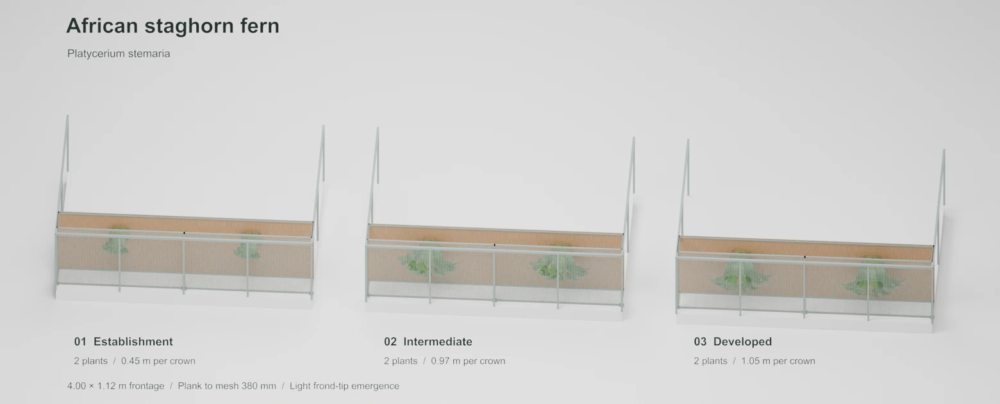
Compact frontage comparison. The builder bends the later fronds for the study.
The stage 01 tips stop about 33 mm behind the mesh plane. The intermediate and developed models project about 28 and 17 mm past it. These are static geometry checks. A mock-up would check where fronds touch the bars, rub or pass through. Saved stage geometry summary
Evidence
Sources and methods
The diagrams trace the question studies, holder library and two detailed mesh assemblies to their sources. The mesh details report geometry from the saved Blender models and their builders. Both are design studies. Mesh products, fixing details and allowable loads need project specifications and checks.